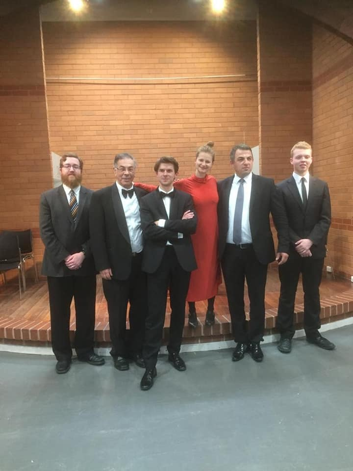
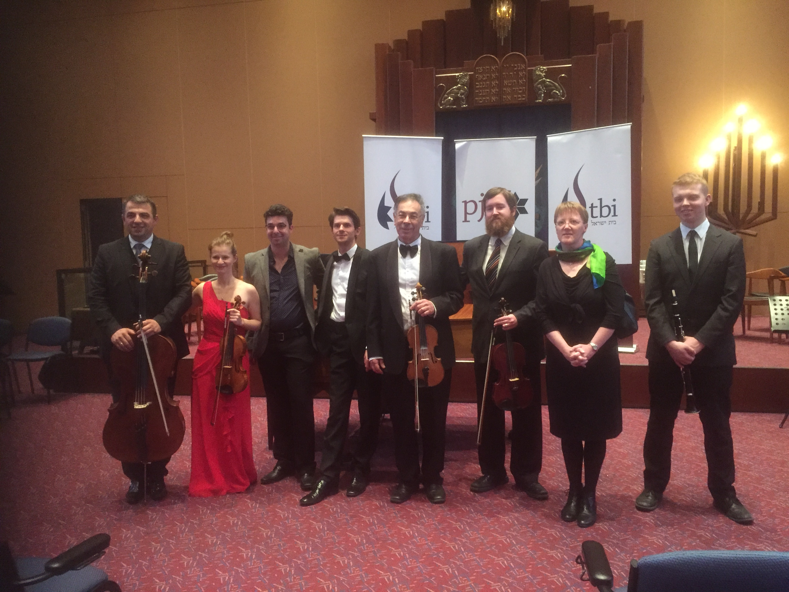
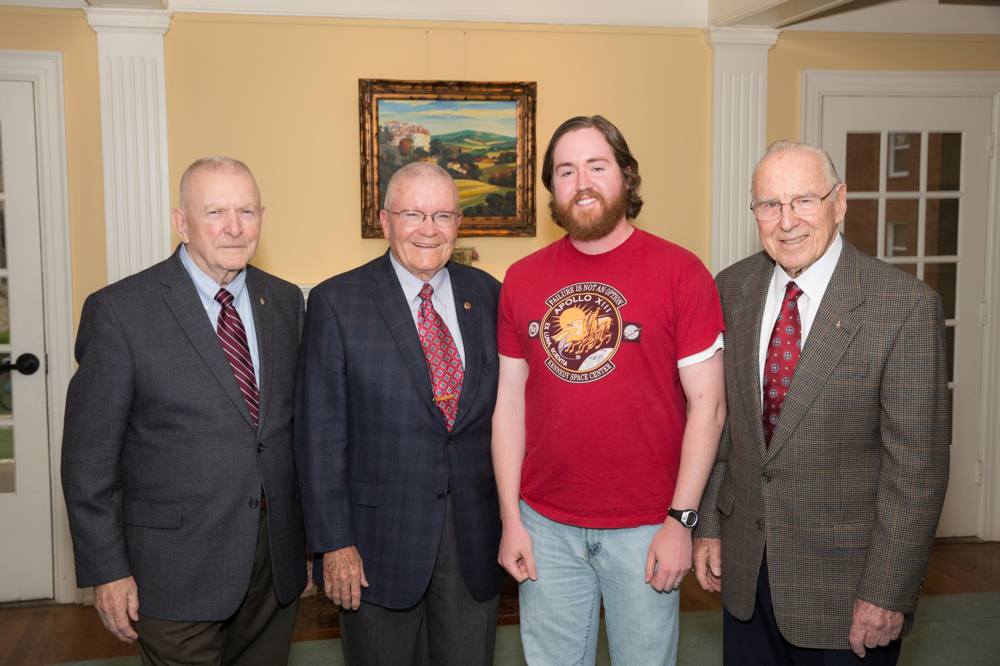
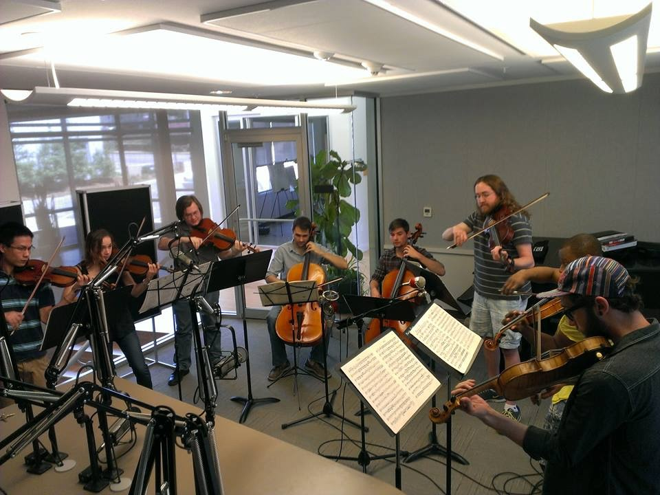
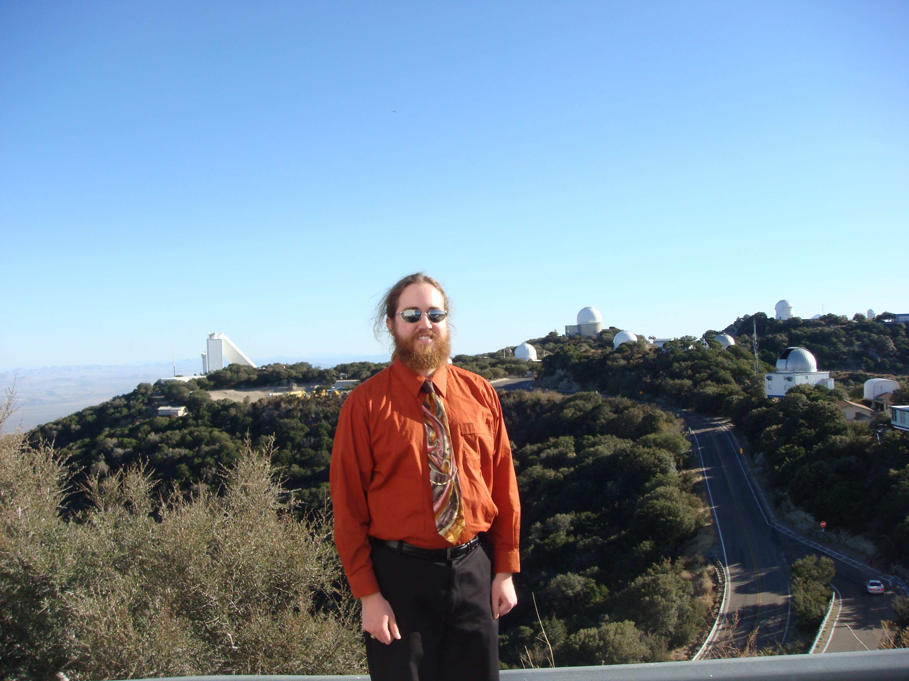
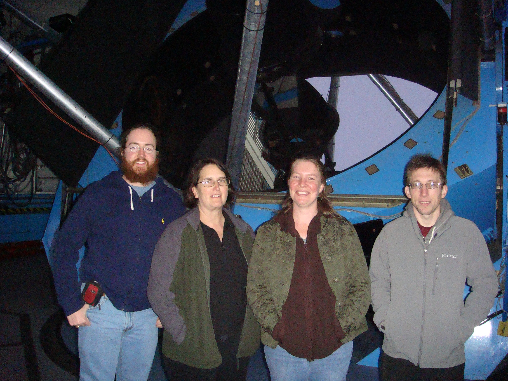

ML-accelerated scientific discovery in action!
— Miles Cranmer (@MilesCranmer) October 12, 2023
This new paper in ApJ Letters uses PySR to discover a new relation between supermassive black hole mass and properties of its host spiral galaxy:
Extremely cool work!!https://t.co/JhPOY93iCv pic.twitter.com/LgRGUXmFOD
In the News
Jump to a Year
BACK TO TOP
ML-accelerated scientific discovery in action!
— Miles Cranmer (@MilesCranmer) October 12, 2023
This new paper in ApJ Letters uses PySR to discover a new relation between supermassive black hole mass and properties of its host spiral galaxy:
Extremely cool work!!https://t.co/JhPOY93iCv pic.twitter.com/LgRGUXmFOD
BACK TO TOP
Shields et al. (2022)
Our paper was featured on the main page of the Galaxies website in November 2022.
BACK TO TOP
Graham et al. (2021a)
- Swinburne University of Technology: "A cosmic romance written in the stars"
- Scimex: "A cosmic romance written in the stars"
- NYUAD: "New Research Uncovers a Cosmic Romance Written in the Stars"
- University of Chinese Academy of Sciences: "A Cosmic Romance"
- NASA: "NASA Telescopes Capture Stellar Delivery Service for Black Hole"
- Chandra X-ray Observatory
- Hubble Space Telescope Twitter Page
- CASS Research Page
-
- Hubble Space Telescope Facebook Page
- CXO News: "NGC 4424: NASA Telescopes Capture Stellar Delivery Service for Black Hole"
- CXO Blog: "NASA Telescopes Capture Stellar Delivery Service for Black Hole"
- CXO Images: "More Images: NASA Telescopes Capture Stellar Delivery Service for Black Hole"
- CXO Quick Look: "NASA Telescopes Capture Stellar Delivery Service for Black Hole"
- CXO Tour: "NASA Telescopes Capture Stellar Delivery Service for Black Hole"
- CXO Tour: "NASA Telescopes Capture Stellar Delivery Service for Black Hole"
- Flickr: "NASA Telescopes Capture Stellar Delivery Service for Black Hole"
- thebhp: "NASA Capture Massive Black Hole Delivered to the Spiral Galaxy NGC 4424 with Hubble & Chandra X Ray"
- Chandra X-ray Observatory Twitter Page
-
- Chandra X-ray Observatory Facebook Page
- Space.com: "Galaxy's violent destruction acted as 'black hole delivery service'"
- Philoshea: "Galaxy’s violent devastation is a ‘black gap supply service’"
- NewsBreak: "Galaxy's violent destruction acted as 'black hole delivery service'"
- Archaeology News Network: "Galaxy Evolution: A Cosmic Romance Written In The Stars"
- PressNewsAgency: "Galaxy's violent destruction acted as 'black hole delivery service'"
- Nach Welt: "Die gewaltsame Zerstörung von Galaxy war ein „Lieferservice für schwarze Löcher“"
- news n9ne: "Telescopes capture stellar delivery service for massive black hole"
- Devdiscourse: "NASA telescopes see a smaller galaxy potentially delivering large black hole to another galaxy"
- Sci.News: "Astronomers Witness ‘Black Hole Delivery System’ in Action"
- SYFY: "BLACK HOLE DELIVERY PIPELINE MAY FEED A NEARBY GALAXY"
- Curiosmos: "Astronomers See Small Galaxy Deliver Black Hole to Another Galaxy"
- TECHIAI: "Astronomers Witness A Black Hole Delivery System In Action! Check Details"
- HT TECH: "Astronomers Witness A Black Hole Delivery System In Action! Check Details"
- TRENDRADARS: "Telescopes capture stellar delivery service for massive black hole"
- sciencesprings: "NGC 4424: NASA Telescopes Capture Stellar Delivery Service for Black Hole"
- Cronica: "Captan el servicio de entrega de agujeros negros entre galaxias"
- Trendy Swipe: "Astronomers Witness a Black Hole Transmission System in Action! check the details"
- Bega District News: "Aussie find a story written in the stars"
- The Goa Spotlight: "Hubble Telescope reveals ‘amazing’ record of distant galaxy and surprises scholars; check out discovery – Metro World News Brasil"
- MadridPress: "Captan el servicio de entrega de agujeros negros entre galaxias"
- Archynewsy: "They capture the delivery service of black holes between galaxies"
- Ferplei: "Ciencia.-Captan el servicio de entrega de agujeros negros entre galaxias"
- Habr: "Учёные предположили, что стали свидетелями «доставки» чёрной дыры одной галактикой в другую"
- Metro World News: "NASA: Telescópio Hubble revela registro ‘assombroso’ de galáxia distante e surpreende estudiosos; confira descoberta"
- X-MOL: "螺旋星系 NGC 4424 的潜在黑洞播种通过下落星团"
- Zhihu: "星系的暴力破坏起“黑洞交付服务”的作用"
- GNT News: "Telescopes capture stellar delivery service for massive black hole"
- The Senior: "Aussie find a story written in the stars"
- Realidades: "CAPTAN el servicio de entrega de agujeros negros entre galaxias"
- Semana: "Captan el servicio de entrega de agujeros negros entre galaxias"
- publimetro: "Ciencia.-Captan el servicio de entrega de agujeros negros entre galaxias"
- Newspostalk: "Telescopes capture stellar delivery service for supermassive black hole"
- LA NACION: "Captan el servicio de entrega de agujeros negros entre galaxias"
- Les Actualités: "Des astronomes sont témoins du `système de livraison de trous noirs' en action"
- SD Pict: "Galaxy’s violent destruction was a ‘black hole delivery service’"
- Trend Detail News: "They capture the delivery service of black holes between galaxies"
- Lire Le Monde: "Des astronomes sont témoins du « système de livraison par trou noir » en action"
- PC News: "Учёные предположили, что стали свидетелями «доставки» чёрной дыры одной галактикой в другую"
- News Day FR: "Ils capturent le service de livraison des trous noirs entre galaxies"
- The Hoop News: "NASA Telescopes Capture Stellar Delivery Service for Black Hole – NASA"
- Head Topics: "Captan el servicio de entrega de agujeros negros entre dos galaxias"
- 163.com: "科学家揭示宇宙星系的“浪漫”进化史"
- news.qq.com: "科学家揭示宇宙星系的“浪漫”进化史"
- kknews: "科學家揭示宇宙星系的「浪漫」進化史"
- looknews: "科學家揭示宇宙星系的“浪漫”進化史"
- zebraask: "科學家揭示宇宙星系的“浪漫”進化史"
- 尋網: "科學家揭示宇宙星系的"浪漫"進化史"
- Cronache di Scienza: "Una galassia `consegna' buchi neri alla sua compagna"
- THENEWS: "Captan el servicio de entrega de agujeros negros entre galaxias"
- Germanic: "Astronomen erleben „Black Hole Delivery System“ in Aktion"
- Beritahu: "Astronom Menyaksikan `Sistem Pengiriman Lubang Hitam' sedang Beraksi"
- UpLinkBr: "Astrônomos testemunham ‘sistema de entrega de buraco negro’ em ação"
- Aus Der Welt: "Astronomen erleben „Black Hole Delivery System“ in Operation"
- News Post US Zero: "Galaxy’s violent destruction was a ‘black hole delivery service’"
- Búsqueda Extraterrestre: "TELESCOPIOS CAPTURAN EL MOMENTO DE ENCUENTRO ENTRE 2 AGUJEROS NEGROS DE GALAXIAS EN COLISIÓN"
- thespeednews: "Telescopes capture stellar delivery service for the supermassive black hole"
- RY-SA: "Uchwyć usługę łączenia czarnych dziur między dwiema galaktykami"
- pahilopahilonews.com: "Astronomers See Small Galaxy Deliver Black Hole to Another Galaxy
- Nagaland Page: "A cosmic romance written in the stars"
- 7 News: "Aussie find a story written in the stars"
- The Canberra Times: "Aussie find a story written in the stars"
- The West Australian: "Aussie find a story written in the stars"
- The North West Star: "Aussie find a story written in the stars"
- Space Daily: "A cosmic romance written in the stars"
- Technology.org: "A cosmic romance written in the stars"
- Suara-Pembaruan: "Sebuah roman kosmik yang ditulis di bintang-bintang"
- Phys.org: "Galaxy evolution: A cosmic romance written in the stars"
- Opera News: "A cosmic romance written in the stars"
- NewsBreak: "Galaxy evolution: A cosmic romance written in the stars"
- Cowdycactus: "A Cosmic Romance Written In The Stars"
- Flipboard: "Galaxy evolution: A cosmic romance written in the stars"
- Portal to the Universe: "A Cosmic Romance Written in the Stars"
- jaituss.com: "A cosmic romance written in the stars"
- Astronomy Nation: "NGC 4424 • Cosmic Romance Written in the Stars"
- Shepparton News: "Aussie find a story written in the stars"
- Easy Branches: "Galaxy evolution: A cosmic romance written in the stars"
- Emarat Al Youm: "باحث في جامعة نيويورك أبوظبي يكشف أسرار خفيّةٍ بين النجوم"
- sahafahn.com: "باحث في جامعة نيويورك أبوظبي يكشف أسرار خفيّةٍ بين النجوم"
- pressn.net: "باحث في جامعة نيويورك أبوظبي يكشف أسرار خفيّةٍ بين النجوم - صحافة الجديد"
- Al Roeya: "باحث من جامعة نيويورك أبوظبي يكشف أسرار ظاهرة كونية خفية"
- Newcastle Herald: "Aussie find a story written in the stars"
- Newsaxes: "Galaxy evolution: A cosmic romance written in the stars"
- Tech and Science Post: "Galaxy evolution: A cosmic romance written in the stars"
- 24h Tech: "A cosmic romance written in the stars"
- XLBUX: "A Cosmic Romance Written Within The Stars"
- mixpoint: "Galaxy evolution: A cosmic romance written in the stars"
- Yahoo! Sport: "Aussie find a story written in the stars"
- News of America: "A cosmic romance written in the stars"
- Antara News: "Sebuah roman kosmik yang ditulis di bintang-bintang"
- Urania: "Subskrybuj Nikhuli"
- Urania: "Ewolucja galaktyki: kosmiczny romans zapisany w gwiazdach"
- News Spain 24: "Un romance cósmico escrito en las estrellas"
- News FR 24: "Une romance cosmique écrite dans les étoiles"
- OzVoice: "澳洲天文学家发现小星系核心可併入大星系"
- Australian Financial News: "into large galaxies in an important process of galaxy evolution"
- Look News: "科学家揭示宇宙星系的“浪漫”进化史"
- Sun News: "科学家揭示宇宙星系的“浪漫”进化史"
- Zhihu: "科学家揭示宇宙星系的“浪漫”进化史"
- Yahoo! Entertainment: "How two galaxies got the gift of a black hole"
- SYFY: "HOW TWO GALAXIES GOT THE GIFT OF A BLACK HOLE"
- Al Khaleej: "باحث من نيويورك أبوظبي يكشف أسرار ظاهرة كونية"
- news.alestad.com: "باحث من نيويورك أبوظبي يكشف أسرار ظاهرة كونية"
- yasiuae.net: "باحث من نيويورك أبوظبي يكشف أسرار ظاهرة كونية"
- newsfounded.com: "باحث في جامعة نيويورك أبو ظبي يكشف أسراراً خفية في النجوم"
- pressbee.news: "برسبي نيوز - باحث في جامعة نيويورك أبوظبي يكشف أسرار خفيّةٍ بين النجوم"
- Zahrat Al Khaleej: "باحث من جامعة نيويورك أبوظبي يكشف أسرار ظاهرة كونية خفية"
- Arabi News: "باحث في جامعة نيويورك أبوظبي يكشف أسرار خفيّةٍ بين النجوم"
- 6060 News (1): "باحث من نيويورك أبوظبي يكشف أسرار ظاهرة كونية"
- 6060 News (2): "باحث من نيويورك أبوظبي يكشف أسرار ظاهرة كونية"
- 6060 News (3): "باحث في جامعة نيويورك أبوظبي يكشف أسرار خفيّةٍ بين النجوم"
- 6060 News (4): "باحث في جامعة نيويورك أبوظبي يكشف أسرار خفيّةٍ بين النجوم"
- Masr Al Youm: "باحث في جامعة نيويورك أبوظبي يكشف أسرار خفيّةٍ بين النجوم"
- Veryarts: "اقرا خبر: باحث في جامعة نيويورك أبوظبي يكشف أسرار خفيّةٍ بين النجوم ..."
- Sawah Host: "باحث في جامعة نيويورك أبوظبي يكشف أسرار خفيّةٍ بين النجوم"
- Sawah News: "باحث في جامعة نيويورك أبوظبي يكشف أسرار خفيّةٍ بين النجوم"
- Pledge Times: "A researcher at New York University Abu Dhabi reveals hidden secrets among the stars"
- sciencesprings: "A cosmic romance written in the stars"
- Tech News: "A cosmic romance written in the stars"
- ORDO News: "Galaxy Evolution A Cosmic Romance Written In The Stars"
- LA MACCHINA DEL TEMPO: "EVOLUZIONE DELLE GALASSIE: UNA STORIA D’AMORE COSMICA SCRITTA NELLE STELLE"
- Clippings
Hey all you good ghouls & goblins, make sure to get your tickets for GHOUL SOUNDS FROM THE CASKET CLUB! Ring in spooky season with live music and silent horror movies - and don't forget to bring your own BOOze. 👻 Opens this Thursday! https://tickets.irvingartscenter.com/MILC222/
Posted by MainStage Irving-Las Colinas on Monday, October 18, 2021
What exactly is Ghoul Sounds From The Casket Club? This awesome video explains it all. Let's get SPOOKY! Performances are Oct. 21-23 at #MainStage222 (222 E. Irving Blvd). Costumes recommended - and don't forget to bring your own BOOze! 👻 Tickets are $16 per performance, or purchase a $35 pass to see all 4 shows! 🎟: https://bit.ly/2YqWbMm
Posted by MainStage Irving-Las Colinas on Monday, October 11, 2021
It's officially spooky season, y'all! And we have the perfect way to celebrate: GHOUL SOUNDS FROM THE CASKET CLUB at...
Posted by MainStage Irving-Las Colinas on Tuesday, October 5, 2021
BACK TO TOP
Great to see that our latest black hole scaling relations provide very precise black hole mass estimates, consistent with new measurements using @ALMANRAO observations https://t.co/4gL3FA1BbD pic.twitter.com/aLO0sWQNUx
— Nandini Sahu (@SahuNandini27) April 13, 2021
BACK TO TOP
In Our Midst – Fast Forward

Clipping from the Galena Sentinel-Times , Wednesday, January 13, 2021 edition.
BACK TO TOP
The mass of central black hole is closely linked to the type of galaxy and the bulge mass.
— Rashmi Sheoran 🔭🚀 (@astro_roxy) October 1, 2020
How did we find this, what are the possibile explanations and does this means both entities co evolve together?@SahuNandini27 is gonna be live, so excited! 💫#scicomm #cosmology pic.twitter.com/B5Og5PmmFY
My first youtube live! 🤩🤗 While reading about the co evolution black hole and their host galaxy and going through the...
Posted by Astro Roxy on Thursday, October 1, 2020
The mass of central black hole is closely linked to the type of galaxy and the bulge mass. How did we find this, what...
Posted by Astro Roxy on Friday, October 2, 2020
My work on the latest black hole scaling relations is a part of this year's Royal Astronomical Society's poster exhibition!!!👩💻
— Nandini Sahu (@SahuNandini27) September 21, 2020
Visit https://t.co/F0MzKCNpTy for the posters by early-career researchers worldwide showcasing their exciting work.#RASposter2020 pic.twitter.com/srOmbJKrWZ
BACK TO TOP
2020 Masonic Lodge Golf Tournament (August 22, 2020)
Clipping from the Galena Sentinel-Times , Wednesday, September 2, 2020 edition.
BACK TO TOP
BACK TO TOP

I was the invited speaker for the Melbourne Chamber Orchestra's "Beethoven Gala Dinner," October 10, 2019, at the Sofitel Melbourne On Collins.
BACK TO TOP


Following the September 8, 2019 concert at the Betty Day Centre. From left to right: Ben Davis, Ron Jontof-Hutter, Roman Salyutov, Liv Migdal, Lev Gordin, and Alex Chapman.


Following the September 1, 2019 concert at Temple Beth Israel. From left to right: Lev Gordin, Liv Migdal, Alon Trigger, Roman Salyutov, Ron Jontof-Hutter, Ben Davis, a representative from the German Embassy Australia, and Alex Chapman.
Concert Program (for both concerts)
BACK TO TOP
Miller et al. (2019)
AAS 234 Press Conference: Spiral Galaxies Near & Far (featuring Miller et al. 2019)
AAS Nova — Press Conference: Spiral Galaxies Near and Far (by Susanna Kohler)
University of Arkansas News — Research on Disk Galaxies Sheds Light on Movement of Stars
Science Bulletin — Research on disk galaxies sheds light on movement of stars
Knowridge Science Report — Why disk galaxies have spiral arms
Phys.org — Research on disk galaxies sheds light on movement of stars
BACK TO TOP

BACK TO TOP
Davis et al. (2017)
- Self-authored Media
- July 2017, Swinburne Media Release: "Spiral Arms Allow School Children to Weigh Black Holes"
- UK Version (MNRAS): "Spiral Arms Allow School Children to Weigh Black Holes"
- Australasian Science: "How You Can Weigh Weigh Black Holes"
- English Press
- PHYS.ORG, IFL Science, Gizmodo, Science Daily, AZO Quantum, COSMOS Magazine, Space Daily, ineffableisland.com, MS-CHAT.COM, Across the Universe, AlphaGalileo, Health Medicine Network, EurekAlert, sciencesprings, & Astro Watch.
- Non-English Press
- Greek1, Greek2, Greek3, Italian1, Italian2, Italian3, German, Dutch1, Dutch2, Dutch3, Czech, Polish, Spanish, Portuguese, Vietnamese1, Vietnamese2, Vietnamese3, Vietnamese4, Vietnamese5, Indonesian, Chinese, & Japanese.
- Radio

BACK TO TOP
Pour-Imani et al. (2016)
- Press
- University of Arkansas News: "U of A Astrophysicists Discover Mechanism for Spiral-Arm Formation in Disk Galaxies"
- Sky & Telescope: "Why Galaxies Have Spiral Arms"
- PHYS.ORG: "Astrophysicists Discover Mechanism for Spiral-Arm Formation in Disk Galaxies"
- UPI: "New evidence for how disk galaxies form spiral arms"
- Breitbart: "Scientists discover how disk galaxies form spiral arms"
BACK TO TOP
Gods Amongst the Trees (April 5, 2016)

From left to right: Ryan Cockerham, Katy Henriksen, Jennine Wager, Miroslava Panayotova, Lia Uribe, Er-Gene Kahng, and Ben Davis.
BACK TO TOP
"KUAF 91.3 FM NPR - Of Note for Friday, August 28, 2015: Worker's Union Ensemble to Play at Nightbird Books"

From left to right: Ben Davis, Ryan Cockerham, Er-Gene Kahng, and Larry Rubin.
Workers, Unite @ Nightbird Books
BACK TO TOP
The Galena Sentinel Times: "Out of this World" by David Nelson (2015)

Pictured here with my doctoral advisor, Dr. Julia Kennefick.
BACK TO TOP
The Galena Sentinel Times: "Davis Receives His Doctorate of Philosophy" by David Nelson (2015)
Apollo 13 astronauts (Fred Haise & Jim Lovell) and flight director (Gene Kranz), 45 years and 6 days after splashdown of the Odyssey. From left to right: Gene Kranz, Fred Haise, Ben Davis, and Jim Lovell (April 23, 2015). For a group photo, including Space Center faculty and students, click here.
BACK TO TOP
The Seven Last Words of Christ (Good Friday, April 3, 2015)

BACK TO TOP
KUAF 91.3 FM NPR - Of Note with Katy Henriksen: "Four Violins, Two Violas and Two Cellos Inside the Firmin-Garner Performance Studio" (April 30, 2014)
From the left, moving clockwise: Andrew Chu, Catalina Barraza, Andrew Thompson, Patrick Bellah, Ronald Juzeler, Ben Davis, Brice Smith, and Baron Lyle.
BACK TO TOP
University of Arkansas News: "Physicists Awarded Telescope Time at Kitt Peak National Observatory" (2013)

Top: Kitt Peak National Observatory. Middle: Ben Davis, Julia Kennefick, Amanda Schilling, and Scott Barrows in front of the WIYN 3.5m telescope. Bottom: WIYN 3.5m control room.
BACK TO TOP
University of Arkansas News: "Winners Announced for From Abstract to Contract: Graduate Student Research Competition" (2012)

From left to right: Chancellor Gearhart, Ben Davis, Jim Rankin, and Provost Gaber.
BACK TO TOPHOME